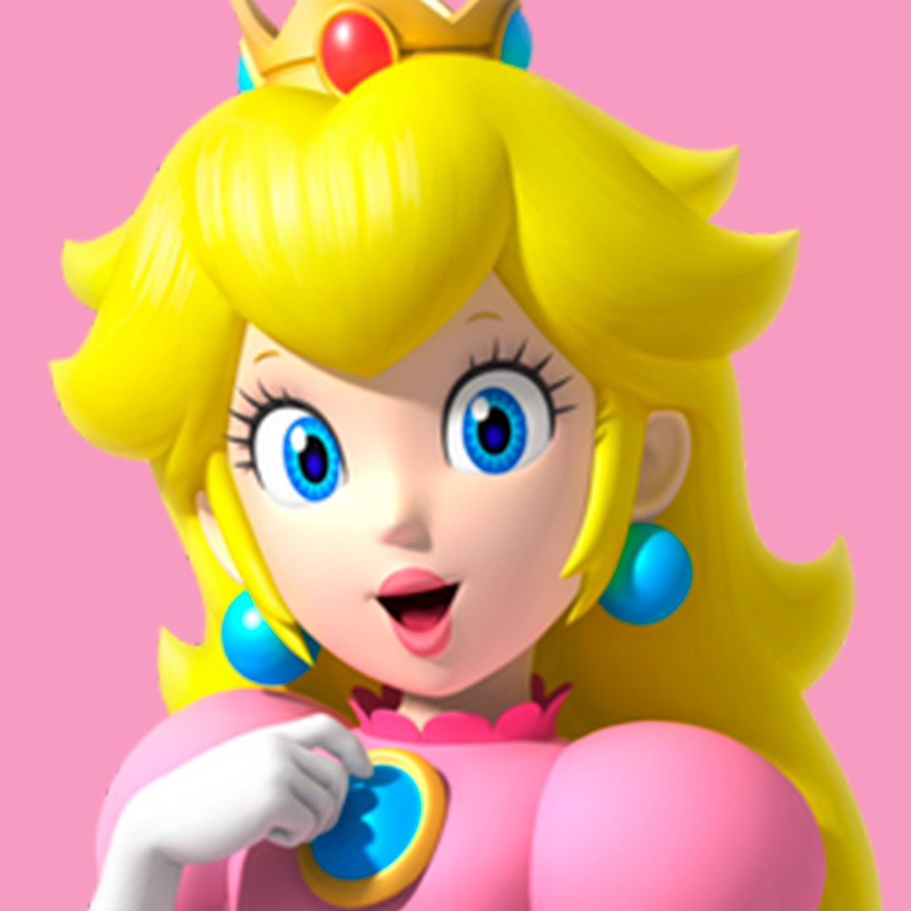
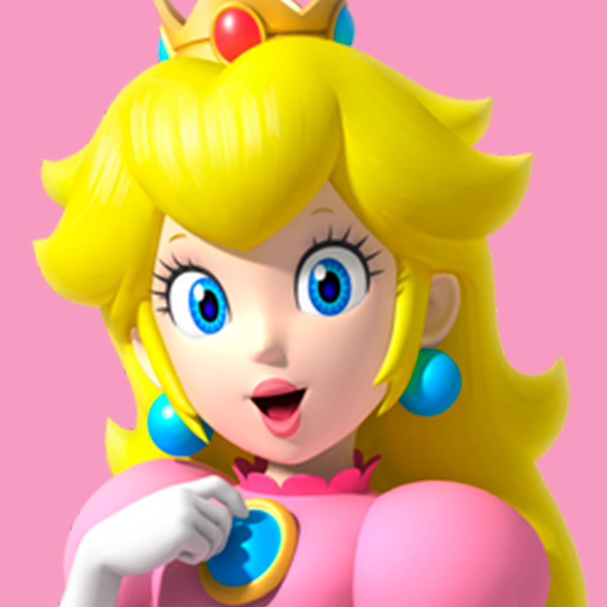

img[src="../Imagen/imagen-pelicula2-banner.jpg" alt="Pelicula Mario 2023" title="Pelicula de Mario" width=100%]+h1{¡Vive la experiencia del rescate de la princesa}+p>b{La pelicula (Super mario bros. movie en ingles)}+i{Es una pelicula anmimad CGI producida por Ilumination en asociasion con nintendo}{Y distribuida por Universal pictures }+u{es la tercera adaptacion cinematografica de la franquicia de mario de nintendo }{despues de la pelicula de anime japonesa de 1986, super mario bros.: }+mark{!la gran mision oara rescatar a la princesa Peach}{y la pelicula de accion en vivo de 1993, super mario bros}^br+hr+br+h2{Conoce algunos personajes de esta pelicula}+(img[ src="../Imagen/Mario.jpg" alt="Mario" title="Mario" width="24%"]+img[ src="../Imagen/Peach.jpg" alt="Peach" title="Peach" width="25%"]+img[ src="../Imagen/Luigi.jpg" alt="Luigi" title="Luigi" width="25%"]+img[ src="../Imagen/Bowser.jpg" alt="Bowser" title="Bowser" width="24%"])+(img[ src="../Imagen/Daisy.jpg" alt="Daisy" title="Daisy" width="24%"]+img[ src="../Imagen/Toad.jpg" alt="Toad" title="Toad" width="25%"]+img[ src="../Imagen/Yoshi.jpg" alt="Yoshi" title="Yoshi" width="25%"]+img[ src="../Imagen/Boo.jpg" alt="Boo" title="Boo" width="24%"])+br+hr+br+h2{Rodaje}+p>u{Antes de su anuncio oficial, en 2017}{ surgieron los primeros reportes de que nintendo se habia aliado con Ilumination para una pelicula animada cgi}+i{ en septiembre de 2020, se anuncio que la pelicula avanzaba en su produccion si problema alguno}{ El rodaje de esta comenzo en 2020, }+b{en colaboracion con ilumination }+mark{Akrededor de sptiembre y octubre de 2021, se revelaron varias capturas de su primer anuncio oficial }^br+hr+br+blockquote>p{"esta sera una aventura sin precedente"}+footer>s{-Anonimo}^footer{-Luigi}

¡Vive la experiencia del rescate de la princesa
La pelicula (Super mario bros. movie en ingles)Es una pelicula anmimad CGI producida por Ilumination en asociasion con nintendoY distribuida por Universal pictures es la tercera adaptacion cinematografica de la franquicia de mario de nintendo despues de la pelicula de anime japonesa de 1986, super mario bros.:
!la gran mision oara rescatar a la princesa Peach
y la pelicula de accion en vivo de 1993, super mario bros
Conoce algunos personajes de esta pelicula
 

Rodaje
Antes de su anuncio oficial, en 2017 surgieron los primeros reportes de que nintendo se habia aliado con Ilumination para una pelicula animada cgi en septiembre de 2020, se anuncio que la pelicula avanzaba en su produccion si problema alguno El rodaje de esta comenzo en 2020, en colaboracion con ilumination
Akrededor de sptiembre y octubre de 2021, se revelaron varias capturas de su primer anuncio oficial
"esta sera una aventura sin precedente"